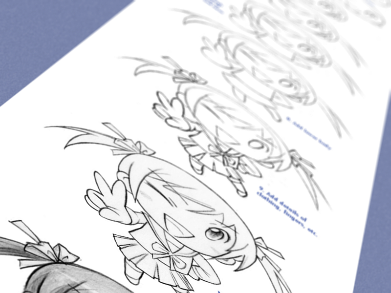
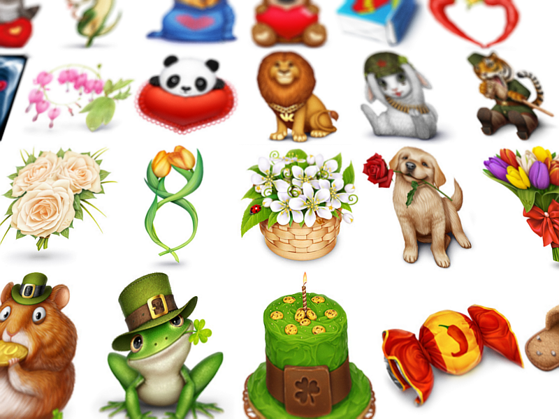

Being an aspiring artist is quite challenging. Being a self-taught artist can be even more so; the difficulty of studying art is compounded by the difficulty of figuring out what it is, precisely, that you should be studying.
Despite this difficulty, many people–myself included– have dedicated themselves to learning art & design without the aid of a class or teacher to support them, choosing instead to rely on books, tutorials, and raw practice to further their skills.
My journey to becoming a self-taught artist has been at times enlightening, exciting, and exhausting. I'm far from done. But I'd like to share with you what I've learned so far, in the hopes that it will make the journey for the rest of you a little easier.
Art Is Not Steps
And art is not a code. It's not a fixed set of discrete processes to learn. Unfortunately, this is what many of us are taught. When we, as young artists, try to learn how to create beautiful art, we find tutorials like this:
...step-by-step walkthrough that appear to show us, clearly and concisely, the methods that great artists use to create their works. These tutorials, however, are misleading and unhelpful, and you should abandon them as soon as possible.
The biggest trick played on amateurs trying to self teach is that making a piece of art is an encoded process. That to draw a cat, we follow the "cat drawing" process. To draw a plane, a "plane drawing" process. That, for every conceivable thing one could ever desire to draw or paint or sculpt or illustrate, there is a specific and unique set of steps which must be followed exactly in order to preclude dissappointing failure. Nothing could be further from the truth.
Great artists don't know how to create everything, they know how to create anything, because they've honed their skill in faithfully reproducing the contents of their own imagination. The act of drawing a cat or a plane is an application of a much larger skill.
No amount of step-by-step, line-by-line tutorials will improve this skill. A book telling you how to draw a thousand different animals is not worth a single page teaching you how to draw what you see in front of you.
If formulaic tutorials are so useless, why are they so popular?
Young artists are discouraged by their failures. Anyone who's ever tried art has doubtless felt the experience of trying to create something beautiful and inadvertently creating some sort of ugly, monstrous piece of art that pales in comparison to the work of the artists we admire.
In the backs of our minds, we may realize that the reason our idols can create such beautiful things is that they have a lifetime of practice.
But that suggests that, as amateurs, we're doomed to make lots of ugly work unless we can somehow invest a massive amount of time in studying before making anything at all. That's a depressing thought!
So, we give up on that, and seek out something that can teach us how to make beautiful stuff now. We deceive ourselves into abandoning the road to success in favor of "get rich quick" techniques that don't work. And when we find out they don't work, we get frustrated and give up.
So what can we do instead?
Don't expect yourself to make good art. But try anyway. In fact, try the things you're most scared of; you're still learning, you'll have to face them eventually. When something you've started doesn't look right, don't give up and do something else. Complete it. There's no piece of art so flawed you won't learn anything by completing it. And it's in fixing mistakes–not getting lucky–that we improve our understanding.
So, if you want to double your success rate, triple your failure rate. Try things that won't work, but try to make them work anyway. Don't focus on the impossible goal of making no mistakes, focus on the useful goal of never making the same mistake twice. Then go out and give yourself as many chances to make mistakes as you can find.
If you start out by defining success as perfect artwork, you're going to have to fail over and over and over. For a lot of us, that's too dismal a prospect to bear. So don't. Define success in each project as better than you started. You'll get better constantly, with all of the satisfaction of achieving success and none of the pain of failure.
Art Is Not A Paintbrush
...nor a program, nor a specific brand of pen. Great artists can make beautiful things with some charred wood and a stone wall.
Choosing a specific tool can give a piece style. But if that style is all your artwork has, it's not yours, and it's not very good. The value of your tool isn't how much it contributes to the piece, it's how much of you it sends through to the piece.
As an artist who uses unconventional tools, I've received many friendly comments to the effect of "How do you live without Photoshop?"
To them, I say: pick whatever tool offers the least impediment between your mind and your canvas. That's the only feature that matters.
Art Is Not Magic
...and great artists aren't magicians. "Creativity" isn't something you turn on and off, "natural talent" doesn't exist, and all artists improve with practice. To protect our egos, we'll often write off the amazing accomplishments of other artists as "talent" rather than experience.
Consider, for example, the reputation of the Russians in the icon/illustration community. They're thought of as superhuman, fantastically good, incomparable, because they make stuff like this:
...which is amazing. But it's not magic. It's experience and dedication and a lot of time invested. The final works that astonish us are the results of a thousand failed pieces that we never see. The higher an artist's skill, the more time they've spent raising it.
The wonderful thing about this, to me, is that skill isn't a lottery. It's not standing around and waiting for talent to sprout in your mind. It's more like a video game, or a sport. The time you put into it [and the efficiency of your learning methods] directly corresponds to your skill level.
The solution to the ego problem isn't to give up and say "I'll never be that good". It isn't crying foul and saying "They have a natural advantage". It's getting better.
There's one or thing to note. If great artists aren't pattern-based machines or secret-tool-using prodigies, how do they get so good?
Great Artists are Obsessed
They fill their twitter feed with their heroes, fill their folders with inspiration, and improve upon their failures whenever they're bored. They stay up late at night making something only to finish it, bury it in a folder, and start something different. They hunt for anything that could be relevant to their study, even when they don't need to. And they keep working even when they're uninspired, even when the project isn't going the way they imagined it. Because it's fun to them.
So if you think it would be fun to self-teach art, do it. It's satisfying, it's inexpensive, and it's something that can easily go from a hobby to a career.
Don't be discouraged by thinking art is about steps, or that you need expensive tools to even begin. Don't confuse talent with the experience and hard work it represents. Don't get discouraged when something doesn't work out. And do make art, as much of it as you can, as often as you can. Have fun.